Tutorial Exosite
Este tutorial irá explicar como configurar um Portal gratuitos, criar uma conta,dispositivo e dados associado, enviar dados para esse dispositivo, e exibir os dados em um widget na sua página inicial do painel.Pré-Requisitos
-
Computador com acesso a internet
-
Conta de Email Ativa
Criando Conta
Para começar, você precisa criar uma conta. Se você já possui uma conta, você pode avançar para a "criar um novo dispositivo" deste documento.- Acessar o site do Exosite’s Account Sign Up web page.
- Complete o formulário e criar a conta.

- Você receberá um e-mail do portals.exosite.com que lhe pede para ativar sua conta. Clique no link apropriado no e-mail para ativar sua conta.
- Quando concluída, faça o login na sua conta Portals login page usando seu endereço de e-mail ea senha que você acabou de criar.. 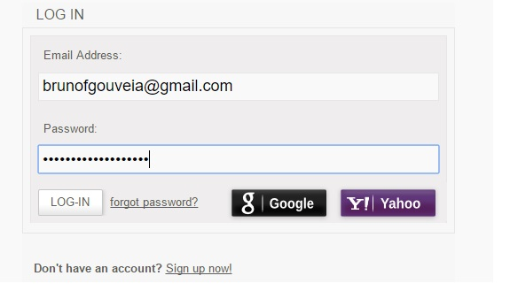 Portal
- Selecione Devices na barra lateral e na pagina, click "+ Add Device." A Device Setup *window will open. On the *Setup Type tab, selecione a opção "I want to create a generic device." Click Continue.
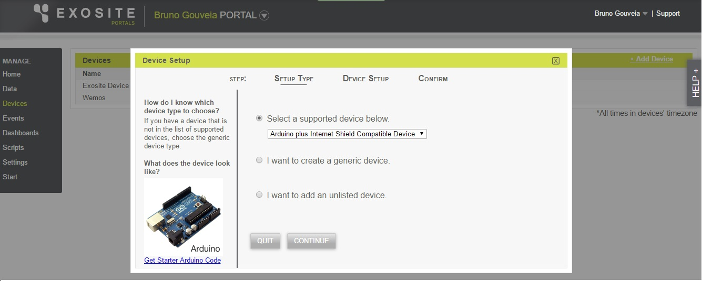 - Device Setup :
- Verifique se o tipo de dispositivo menu drop-down é definido como genérico..
- Selecione seu fuso horário.
- Digite um local no campo Device Location A localização pode ser qualquer coisa que indica a localização do dispositivo, mas não pode ser deixado vazio. No exemplo a seguir, a localização é definida para João Pessoa.
- Click Continue.
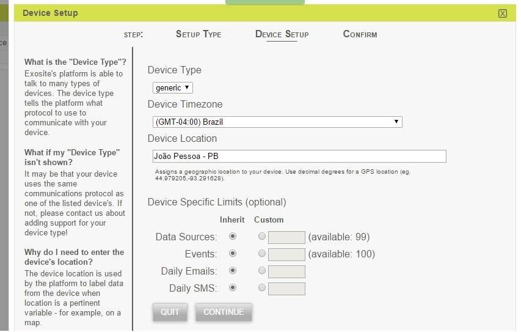 - Em seguida especifique um nome para o dispositivo.
Agora você deve ver o dispositivo que você acabou de criar. Para visualizar as informações pertinentes sobre o dispositivo, clique no dispositivo para abrir a janela de Informações do dispositivo.
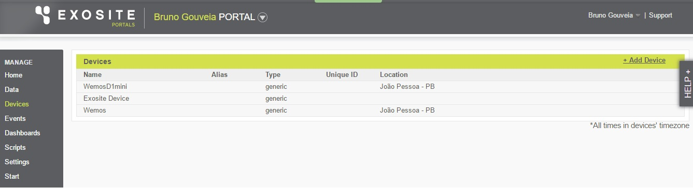
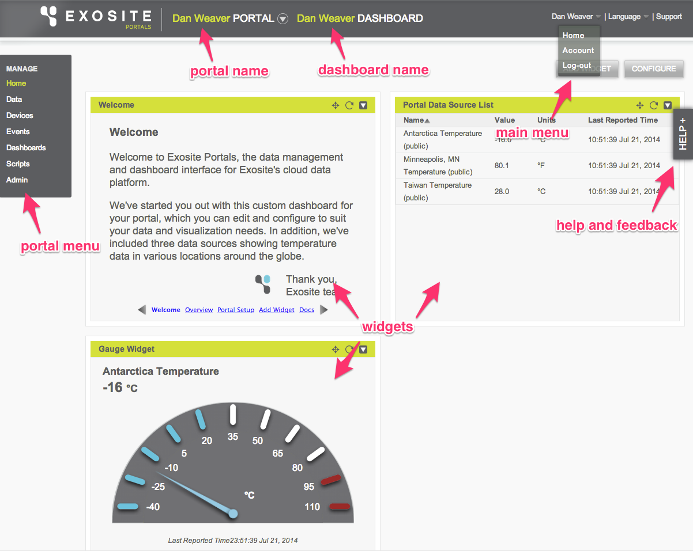
Exemplo
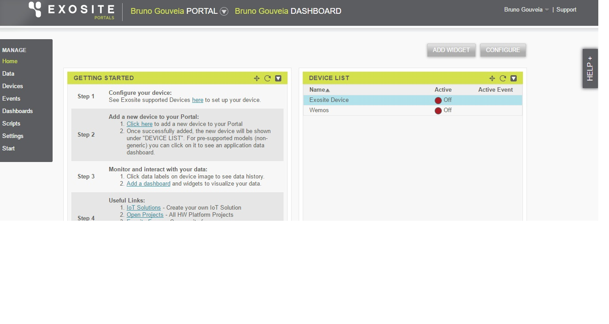
Criando novo Device
Para os fins deste tutorial, este dispositivo será temperatura para o qual você pode gravar dados da temperatura Ambiente.
Criando novo Dado
Para gravar dados no dispositivo que você acabou de criar, você precisa primeiro criar uma porta de dados para conter os dados. A porta de dados contém uma série de pontos com registro de tempo e pode viver dentro de um dispositivo ou de um portal.
- Selecione "Data" do menu Portal para exibir uma lista de todos os dispositivos em seu portal e suas portas de dados associados.
- Em Data, click "+ Add Data."
- Abrirar a janela da Data Setup:
- Selecione o rótulo do botão de rádio "From a Device" já que você está adicionando uma porta de dados para o dispositivo que você acabou de criar.
- Selecione o dispositivo que você acabou de criar
- Click Continue.
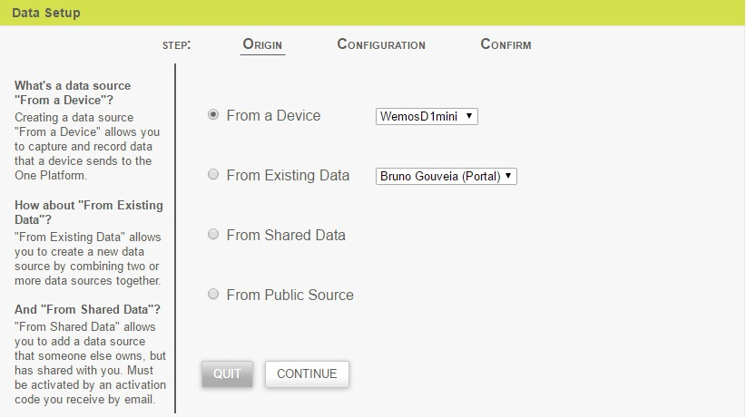
- Em *Data Source Name *field. Escolha o nome fantasia para descrever o seu dado.
- Selecione o tipo do dados em Data Source Format. No caso de temperatura podemos escolher Float
- Escolha a Unidade no Dado. No exemplo aqui ºC/li>
- Este é o nome de dispositivos que será usado para identificar este dado ao acessar interfaces (APIs).
- Click Submit.
Configurando o dado
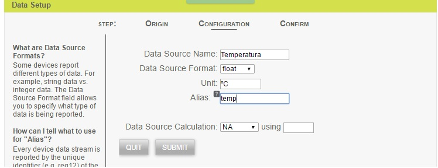
Personalizando Widgets
Agora que você tem um dado configurado à porta de dados, você pode criar um widget para capturar essa informação na sua página inicial do painel.
- Selecione "Home" no menu para retornar a pagina principal.
- Click "Add Widget" para adicionar um novo Widget.
- Selecione Gauge em Widget Type na opção.
- Block Title é o Título do Widget.
- Click Continue. 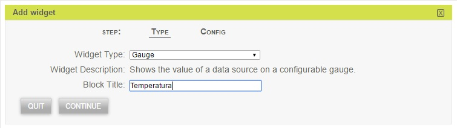
Na guia de Configuração, você pode configurar muitas características do widget.
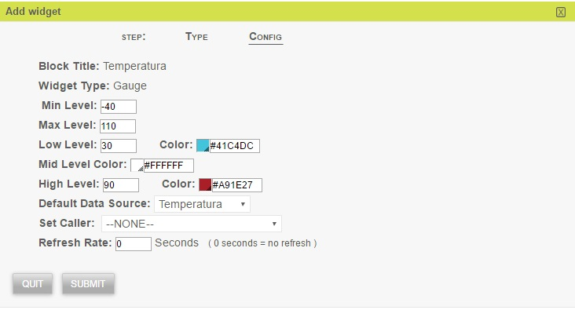- Click Submit.
Deverá da uma mensagem Widget added successfully. Click Quit para retornar para seu dashboard.
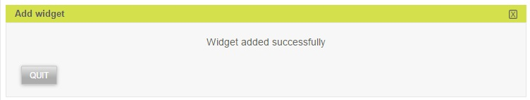
Por padrão, o novo widget ocupa o primeiro espaço vazio no painel.
Observe que os relatórios de widget recarrega com base no tempo de atualização que você definiu. Você pode usar cURL ou EXOline para gravar dados eo widget irá atualizar automaticamente o número que aparece quando ele recarrega.